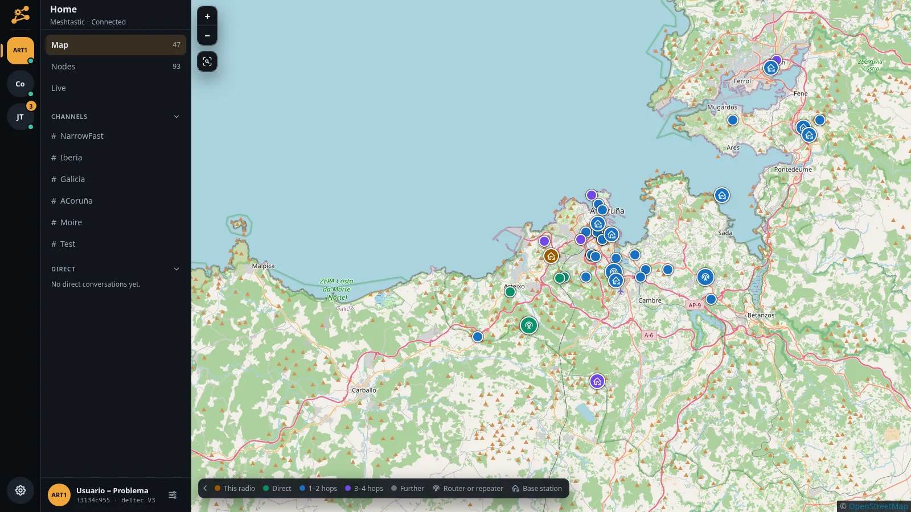
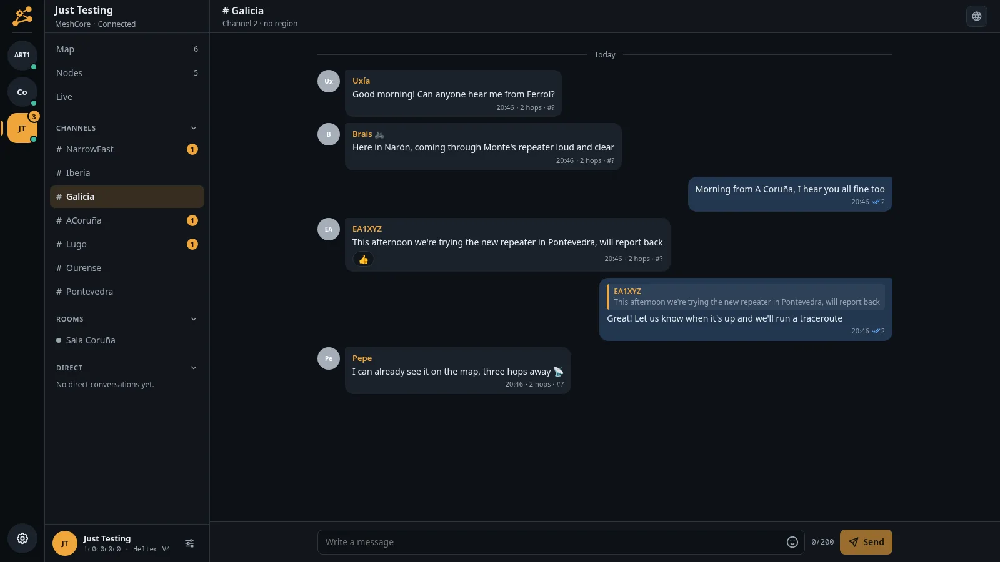
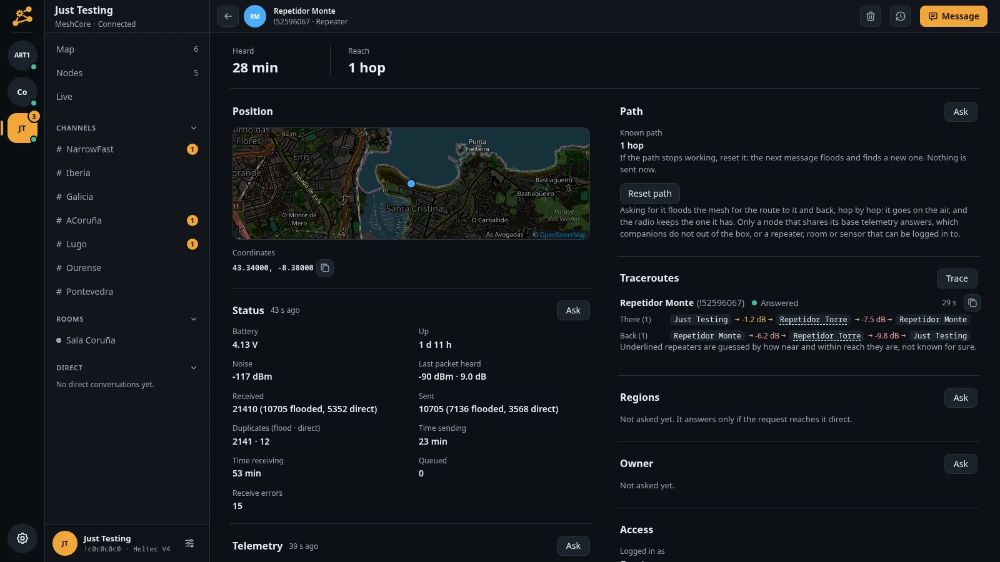
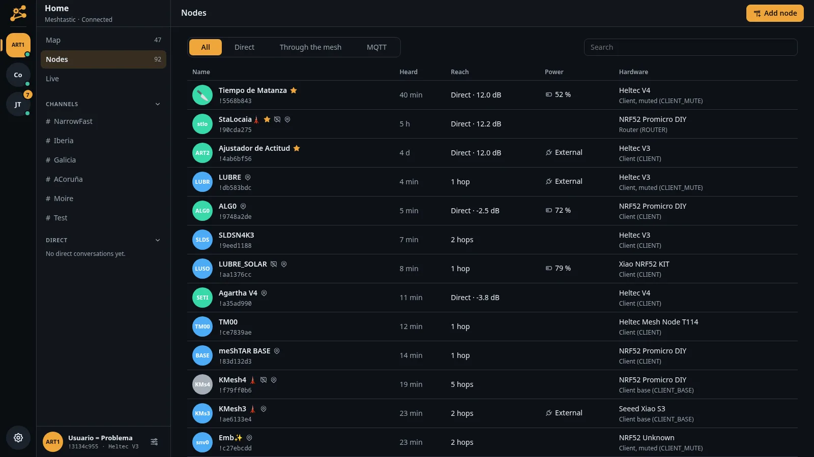
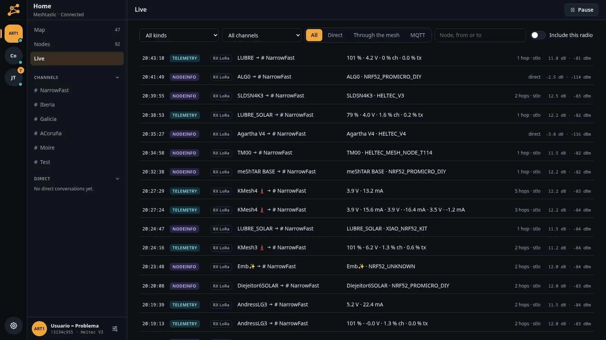
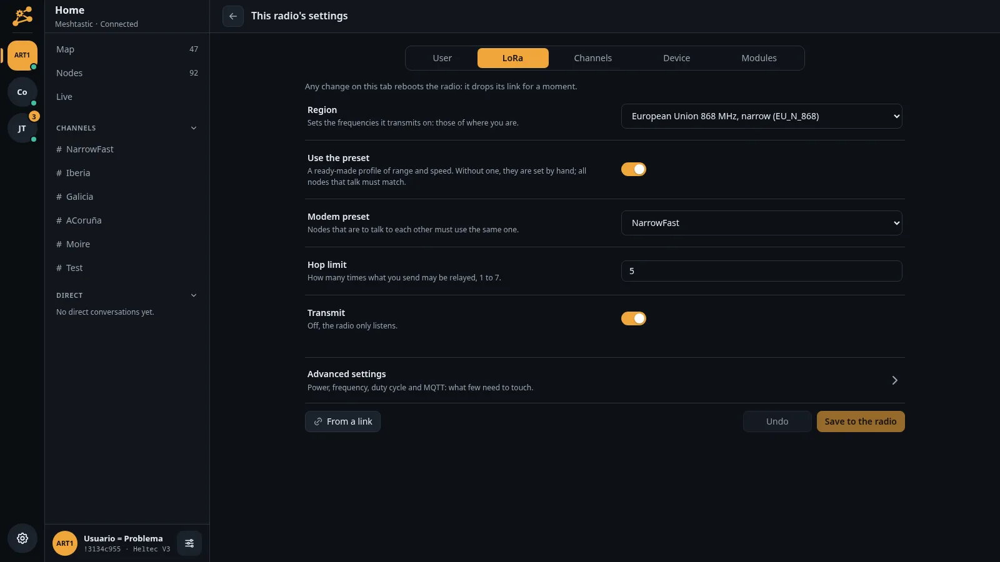
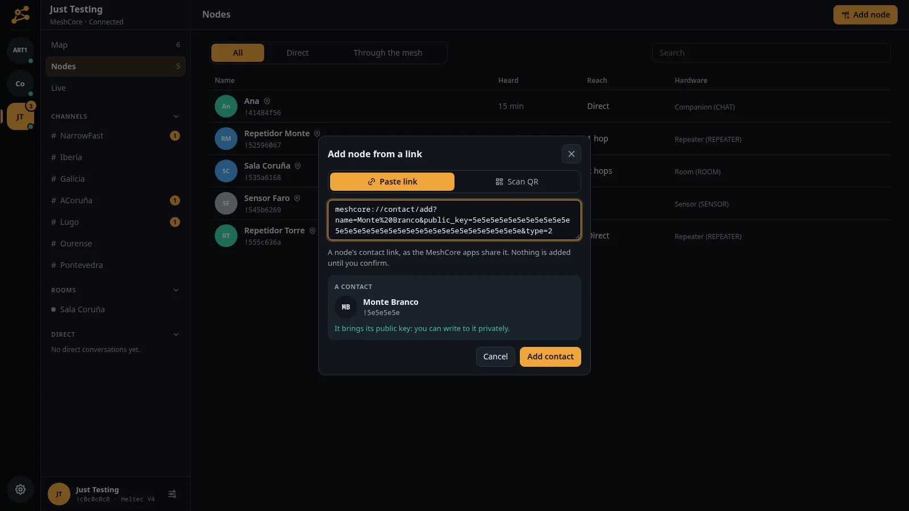
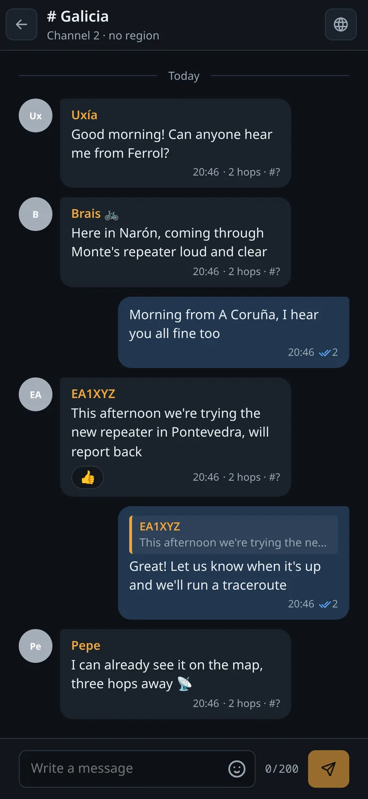
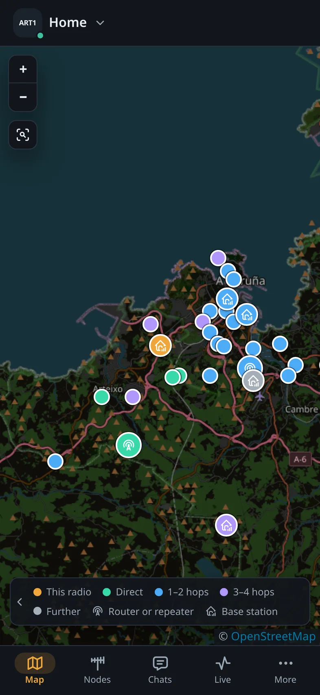

Your mesh radios, under control.
meshctl stays connected to your Meshtastic and MeshCore radios around the clock, keeps what they hear, and lets you chat on their channels and in private, see the mesh on a map, follow every packet they hear and set them up.
One small binary with the panel inside, for a server, a Raspberry Pi or a container; a desktop app for Windows and Linux; and an app for your phone. One radio or a dozen, all from the same panel, in English and Spanish. meshctl is young and changes fast: try it, and tell what you find.
Your radios
Meshtastic and MeshCore, as many as you have, over the network or a cable, connected around the clock and again on their own when the link drops.
The mesh on a map
Every node heard, when, how well and how far, on a list and on a map, coloured by how many hops away it is.
A page per node
What it says about itself, and what it can be asked for: status, telemetry, neighbours, its position, a sensor's readings, a repeater's access.
Chat
Channels and private messages, kept while you were away, with replies, reactions and marks that tell whether anyone heard them; MeshCore's rooms too.
Routes
Traceroutes on both meshes and MeshCore's route discovery, every hop on the map, those only deduced marked as such.
Live
Every packet the radio hears, as it hears it, with what it carries and the way it came.
Settings
A radio's user, LoRa, channels, device and modules, each field explained, and what only matters with something on shown only then.
Links and QR codes
Nodes, channels and a radio's LoRa added from the links the apps share: pasted, read from a QR code with the camera, or shared to it on a phone.
Wherever you are
From any browser, as a desktop app that keeps listening with its window closed, or as an app on your phone. Free software, under the GPL.
Screens
The mesh around A Coruña, as meshctl shows it; the chat, on a radio made for showing it.
The mesh on a map

Every node with a position, coloured by how far it is, routers and base stations marked.
Chat

Replies, reactions, and marks that tell whether a message went out and who heard it.
A node

Its position, what it answered when asked, and the route to it, hop by hop, there and back.
Nodes

Every node heard, to search and filter: direct, through the mesh or by MQTT.
Live

Every packet as it is heard, to filter by kind, channel or node.
Settings

Each setting said in words, and saved to the radio when you say so.
From a link

Pasted, scanned or shared: read at once, and added only once you confirm.
On a phone


The whole panel, laid out for a phone, and installed as an app from the browser.
Install it
Each release brings all of these.
The daemon
meshctldOne binary, the panel inside, for Linux (x86_64 and aarch64, any distribution) and macOS. Run it and open http://127.0.0.1:7434; the first time, the panel asks for a radio.
On your own machine it needs no token: only you reach it. To reach it from elsewhere, give it one, or put a proxy in front; the README says how.
Container
podman run -d --name meshctl \
-p 127.0.0.1:7434:7434 \
-v meshctl:/var/lib/meshctl \
ghcr.io/ogarcia/meshctl:latestFor amd64 and arm64. latest is the last release; master, the last change, bugs included at no extra charge.
Desktop app
- Windows: a portable folder. Unzip it, run
meshctl.exe; what it keeps goes beside it. - Linux: a Flatpak,
flatpak install --user meshctl-*.flatpak.
The daemon inside, on your machine alone. Closing its window keeps it listening to your radios, and meshcore:// links open in it.
On your phone
Open meshctl in the phone's browser and install it as an app, from its menu. On Android, links shared to it, from the Meshtastic or MeshCore apps, open it to add what they hold.
Browsers allow that, and the camera that reads QR codes, over HTTPS: put meshctl behind a proxy that serves it so.